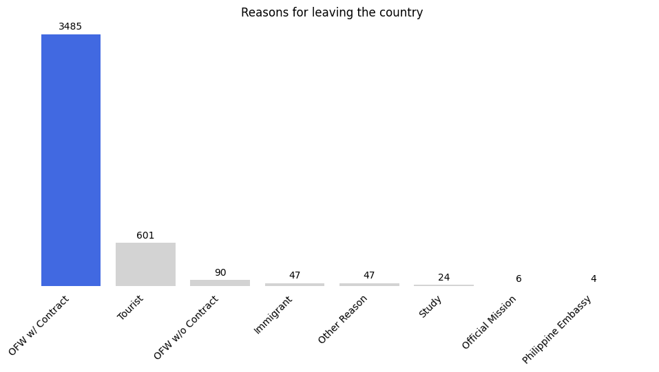
A Data-Driven Analysis of Overseas Filipino Workers
Income Determinants, Remittance Prediction, and Labor Market Disparities
Objective
The primary goal of this research is to evaluate the financial and demographic outcomes of overseas labor. Through a combination of statistical analysis and machine learning, this study examines how worker backgrounds and host country environments influence earning potential and capital flow. The technical methodology of this report is driven by three specific objectives:
Predictive Remittance Modeling: Utilizing regression analysis to forecast cash remittance amounts based on the destination country, months worked, and average monthly income.
Labor Market and Gender Disparities: Applying demographic cross-tabulation to identify gender inequalities across employment sectors and explicitly measure the “brain drain” of highly educated workers in low-skilled occupations.
Income Feature Importance: Leveraging machine learning algorithms to rank the predictive power of various features, isolating whether education, occupation, or location is the definitive driver of higher overseas earnings.
Exploratory Data Analysis
Description of the data
The Survey on Overseas Filipinos (SOF) 2023 was undertaken by the Philippine Statistics Authority as a rider to Labor Force Survey October 2023.
The survey was designed to gather national estimates on the number of overseas workers, their socio-economic characteristics and other information pertaining to the overseas workers who worked or have worked abroad from April to September 2023. The remittances of the Overseas Filipino Workers (OFWs) in cash or in kind were also accounted for the specified reference period. The SOF data are useful inputs to government planners, migrant advocates, researchers, academes, concerned citizens, and other data users to the formulation of policies and programs for the welfare of the overseas Filipino.
Data Analysis
Figure 1 illustrates the primary reasons Filipinos leave the country. The data reveals that the overwhelming majority travel for documented employment, with ‘OFW w/ Contract’ accounting for 3,485 respondents. Tourism is the second most common reason at 601 respondents. Meanwhile, all other categories, such as traveling without a contract (90), immigration (47), and study (24), make up a very small fraction of the total volume.
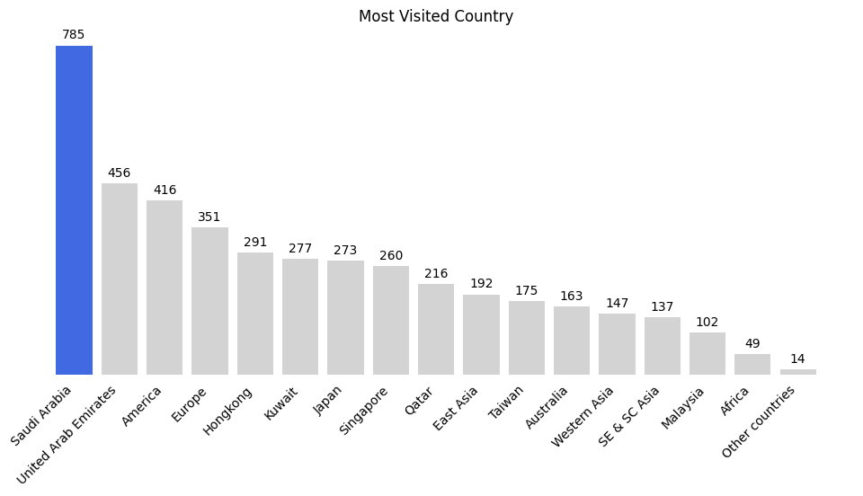
Figure 2 illustrates the distribution of Overseas Filipino Worker (OFW) destinations among the respondents. The data reveals a strong concentration in the Middle East, with Saudi Arabia being the leading destination by a significant margin (785 respondents). This is followed by the United Arab Emirates (456). Other major non-Middle Eastern destinations include the Americas (416) and Europe (351), while traditional Asian hubs like Hong Kong, Japan, and Singapore make up the middle tier of the distribution.
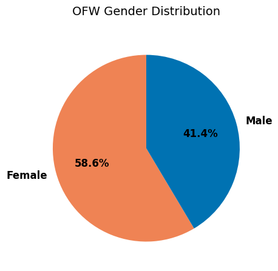
Figure 3 illustrates the gender distribution of the surveyed Overseas Filipino Workers. The data indicates a notably female-majority workforce within this sample, with women comprising 58.6% of the respondents compared to 41.4% men.
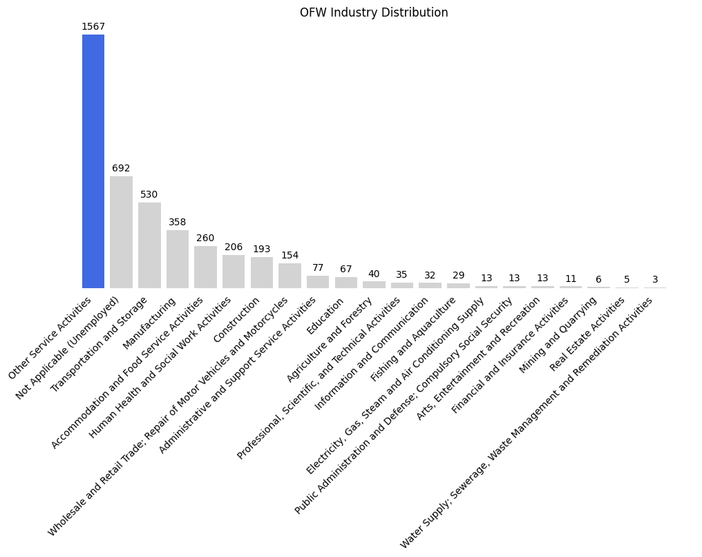
Figure 4 illustrates the industry distribution among the surveyed OFWs. The data reveals a heavy concentration in ‘Other Service Activities,’ which dominates the workforce at 1,567 respondents. Notably, the second-largest category is ‘Not Applicable (Unemployed)’ with 692 individuals, suggesting a significant portion of the sample may be between contracts, seeking employment, or traveling as dependents. Specific traditional sectors such as Transportation and Storage (530) and Manufacturing (358) form the next tier of the workforce.
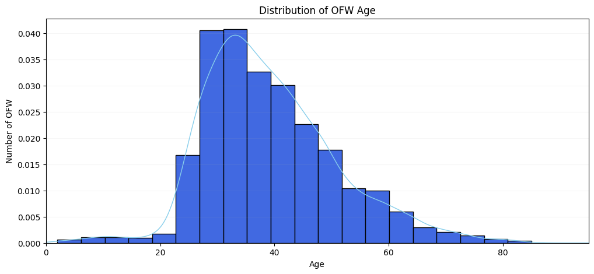
Figure 5 illustrates the age distribution among the surveyed OFWs. The distribution is moderately right-skewed (skewness ≈ 0.64), suggesting that while the bulk of the workforce consists of younger adults, there is a small but notable presence of older workers extending into their 80s.
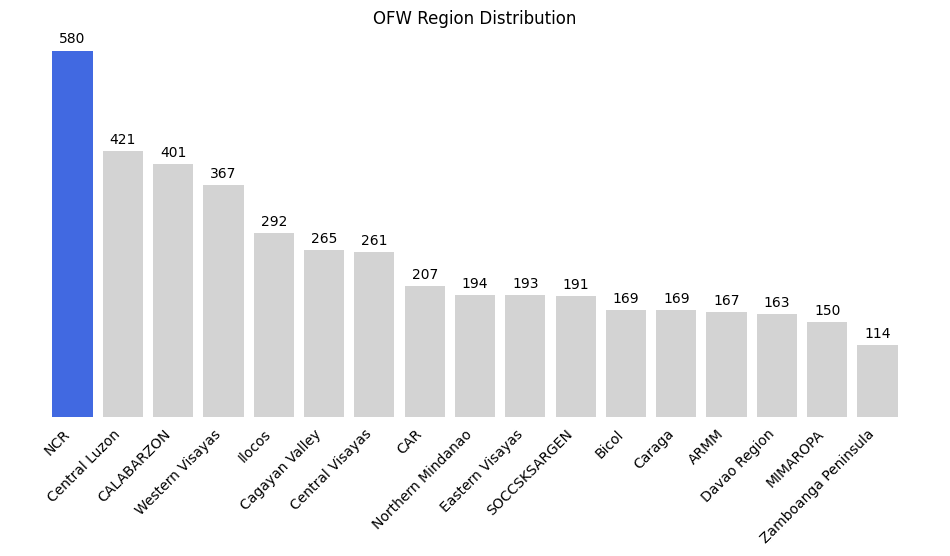
Figure 6 illustrates the geographical origins of the surveyed OFWs. The National Capital Region serves as the primary source of overseas labor (580 respondents), followed closely by Central Luzon and CALABARZON, demonstrating that the bulk of the surveyed workforce originates from the country’s most highly urbanized centers.
Bivariate & Multivariate Analysis
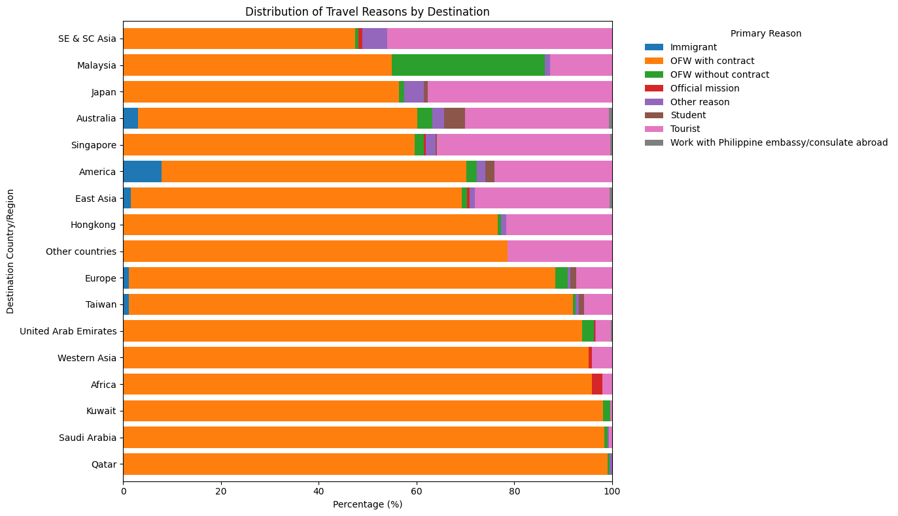
Figure 7 presents a stacked bar chart illustrating the distribution of travel reasons across different destination countries. It highlights that for most destinations, “OFW w/ Contract” is the predominant reason for leaving, reinforcing the earlier observation that the majority of Filipinos travel for documented employment. However, some destinations show a higher proportion of “Tourist” or “Immigrant” reasons, indicating variations in migration patterns depending on the country.
sex Female Male
overseas_industry
Accommodation and Food Service Activities 37.692308 62.307692
Administrative and Support Service Activities 58.441558 41.558442
Agriculture and Forestry 37.500000 62.500000
Arts, Entertainment and Recreation 46.153846 53.846154
Construction 5.181347 94.818653
Education 77.611940 22.388060
Electricity, Gas, Steam and Air Conditioning Su... 0.000000 100.000000
Financial and Insurance Activities 63.636364 36.363636
Fishing and Aquaculture 0.000000 100.000000
Human Health and Social Work Activities 74.271845 25.728155
Information and Communication 31.250000 68.750000
Manufacturing 23.743017 76.256983
Mining and Quarrying 16.666667 83.333333
Not Applicable (Unemployed) 61.416185 38.583815
Other Service Activities 95.341417 4.658583
Professional, Scientific, and Technical Activities 48.571429 51.428571
Public Administration and Defense; Compulsory S... 15.384615 84.615385
Real Estate Activities 80.000000 20.000000
Transportation and Storage 4.339623 95.660377
Water Supply; Sewerage, Waste Management and Re... 0.000000 100.000000
Wholesale and Retail Trade; Repair of Motor Veh... 47.402597 52.597403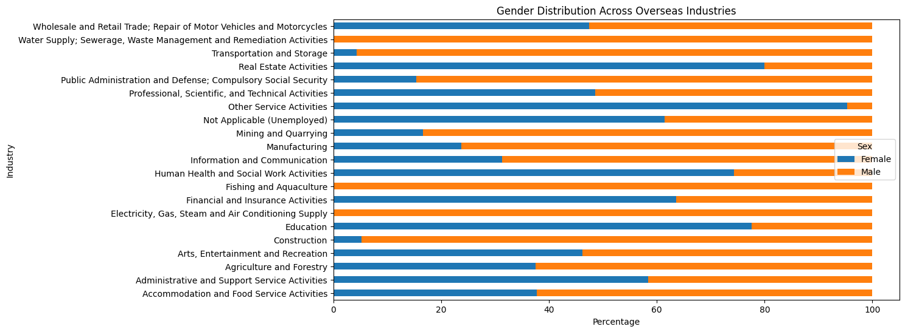
Figure 8 displays the gender distribution across various overseas industries. This stacked bar chart reveals significant gender disparities in certain sectors. For instance, some industries might be heavily dominated by female workers (e.g., “Other Service Activities” often includes domestic work and caregiving), while others might show a male majority (e.g., “Construction” or “Transportation and Storage”). The “Not Applicable (Unemployed)” category also shows its own gender split, which could indicate differences in employment seeking behaviors or opportunities for men and women.
C:\Users\Joseph Rey\AppData\Local\Temp\ipykernel_31156\2010470079.py:5: FutureWarning:
Passing `palette` without assigning `hue` is deprecated and will be removed in v0.14.0. Assign the `y` variable to `hue` and set `legend=False` for the same effect.
sns.barplot(x=country_remittance.values, y=country_remittance.index, palette='coolwarm')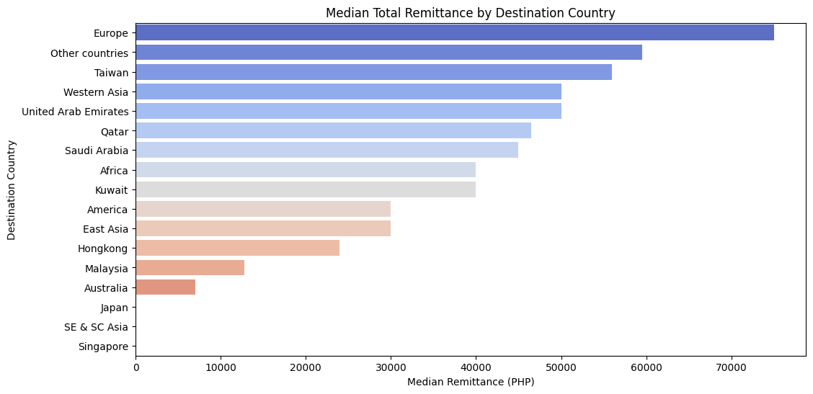
Figure 9 illustrates the median total remittance sent by OFWs, broken down by their destination country. This bar plot highlights which countries are associated with higher or lower remittance flows. Destinations with higher median remittances could indicate better earning opportunities, higher cost of living, or stronger cultural ties encouraging more financial support to families back home. Conversely, lower median remittances might suggest less lucrative job markets or different financial priorities.
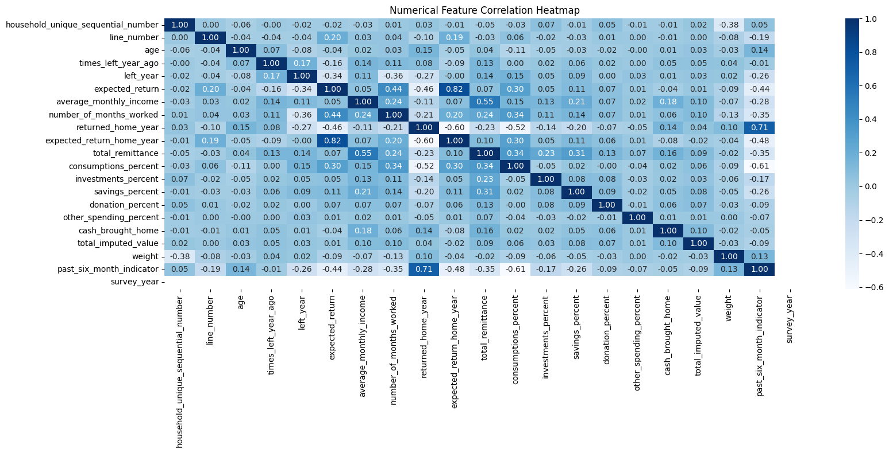
Figure 10 presents a heatmap of the correlation matrix for all numerical features in the dataset. This visualization helps identify relationships between different quantitative variables. Strong positive correlations (values close to 1) indicate that two variables tend to increase or decrease together, while strong negative correlations (values close to -1) suggest an inverse relationship. Correlations close to 0 imply a weak linear relationship. This heatmap is crucial for understanding potential multicollinearity among features, which is important for subsequent machine learning model building, and for identifying key drivers of variables like total_remittance or average_monthly_income.
C:\Users\Joseph Rey\AppData\Local\Temp\ipykernel_31156\1510726419.py:9: FutureWarning:
Passing `palette` without assigning `hue` is deprecated and will be removed in v0.14.0. Assign the `y` variable to `hue` and set `legend=False` for the same effect.
sns.barplot(x=avg_allocations.values, y=[col.replace('_', ' ').title() for col in avg_allocations.index], palette='pastel')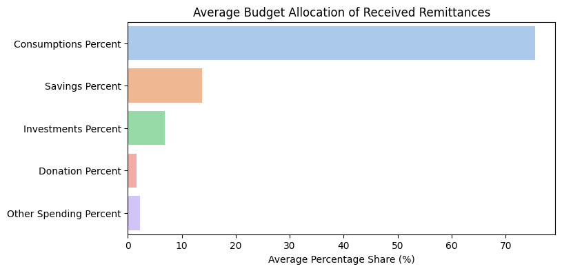
Figure 11 illustrates the average allocation of received remittances across different spending categories. This bar plot provides insight into how OFW families utilize the money sent home. It shows the percentage of remittances typically spent on consumptions, savings, investments, donations, and other categories. This breakdown is vital for understanding the economic impact of remittances on household welfare and local economies, highlighting whether the funds are primarily used for daily needs, long-term financial security, or community support.
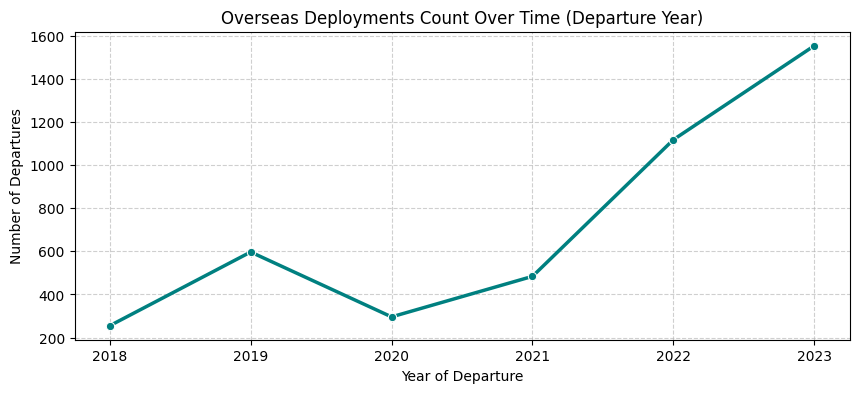
Machine Learning
OBJECTIVE 1: PREDICTIVE REMITTANCE MODELING (Regression)
This section focuses on building regression models to predict the total cash remittance sent by Overseas Filipino Workers (OFWs). The models will leverage features such as the destination country, duration of work (in months), and average monthly income to forecast remittance amounts. Ensemble regression techniques, specifically Random Forest and XGBoost, will be employed and evaluated using 5-fold cross-validation.
Data Preparation for Remittance Prediction
Data preparation complete for Remittance Prediction.
Shape of X_train: (2290, 3)
Shape of y_train: (2290,)
Shape of X_test: (573, 3)
Shape of y_test: (573,)Model Training and Evaluation
Random Forest Regressor
Random Forest Regressor Evaluation:
Mean Absolute Error (MAE): 51123.20
Mean Squared Error (MSE): 6490886064.94
Root Mean Squared Error (RMSE): 80566.04
R-squared (R2): 0.12XGBoost Regressor
XGBoost Regressor Evaluation:
Mean Absolute Error (MAE): 52966.86
Mean Squared Error (MSE): 8460902217.44
Root Mean Squared Error (RMSE): 91983.16
R-squared (R2): -0.15Linear Regression
Linear Regression Evaluation:
Mean Absolute Error (MAE): 48056.75
Mean Squared Error (MSE): 5348230678.02
Root Mean Squared Error (RMSE): 73131.60
R-squared (R2): 0.275-Fold Cross-Validation
Random Forest Cross-Validation
Random Forest Cross-Validation R-squared Scores:
[0.12639065 0.30781372 0.15039101 0.20466174 0.24928545]
Mean CV R-squared: 0.21
Standard Deviation of CV R-squared: 0.07XGBoost Cross-Validation
XGBoost Cross-Validation R-squared Scores:
[-0.15016763 0.22886434 0.13600629 0.14376673 0.17714561]
Mean CV R-squared: 0.11
Standard Deviation of CV R-squared: 0.13Linear Regression Cross-Validation
Linear Regression Cross-Validation R-squared Scores:
[0.27296621 0.48079582 0.26721568 0.38341372 0.3597853 ]
Mean CV R-squared: 0.35
Standard Deviation of CV R-squared: 0.08Remittance Forecast Output
Based on the evaluation, the model with the higher mean cross-validation R-squared score would be chosen for forecasting. For demonstration, we will use the trained XGBoost model to predict remittances for a sample input.
Let’s assume we want to predict the remittance for an OFW: - Destination Country: Saudi Arabia - Number of Months Worked: 12 - Average Monthly Income: 50000 PHP
Predicted Total Cash Remittance for the sample OFW: PHP 99170.63OBJECTIVE 2: LABOR MARKET & GENDER DISPARITIES (Classification)
This objective aims to analyze labor market and gender disparities among Overseas Filipino Workers (OFWs). It involves segmenting data by sex and highest educational attainment, performing cross-tabulations with overseas occupations, and using statistical tests to identify significant relationships. A key focus will be on quantifying underemployment, specifically identifying degree holders working in elementary occupations.
Data Segmentation and Cross-Tabulation
Cross-Tabulation: Gender vs. Overseas Industry
overseas_industry Accommodation and Food Service Activities \
sex
Female 98
Male 162
overseas_industry Administrative and Support Service Activities \
sex
Female 45
Male 32
overseas_industry Agriculture and Forestry \
sex
Female 15
Male 25
overseas_industry Arts, Entertainment and Recreation Construction \
sex
Female 6 10
Male 7 183
overseas_industry Education \
sex
Female 52
Male 15
overseas_industry Electricity, Gas, Steam and Air Conditioning Supply \
sex
Female 0
Male 13
overseas_industry Financial and Insurance Activities \
sex
Female 7
Male 4
overseas_industry Fishing and Aquaculture \
sex
Female 0
Male 29
overseas_industry Human Health and Social Work Activities \
sex
Female 153
Male 53
overseas_industry Information and Communication Manufacturing \
sex
Female 10 85
Male 22 273
overseas_industry Mining and Quarrying Other Service Activities \
sex
Female 1 1494
Male 5 73
overseas_industry Professional, Scientific, and Technical Activities \
sex
Female 17
Male 18
overseas_industry Public Administration and Defense; Compulsory Social Security \
sex
Female 2
Male 11
overseas_industry Real Estate Activities Transportation and Storage \
sex
Female 4 23
Male 1 507
overseas_industry Water Supply; Sewerage, Waste Management and Remediation Activities \
sex
Female 0
Male 3
overseas_industry Wholesale and Retail Trade; Repair of Motor Vehicles and Motorcycles
sex
Female 73
Male 81
======================================================================
Cross-Tabulation: Highest Grade Completed vs. Overseas Industry
overseas_industry Accommodation and Food Service Activities \
highest_grade_completed
College graduate 123
College undergraduate 43
Elementary graduate 3
Elementary undergraduate 1
Junior high graduate 69
Junior high undergraduate 4
None 0
Post graduate 1
Post secondary graduate 15
Post secondary undergraduate 0
Senior high graduate 1
overseas_industry Administrative and Support Service Activities \
highest_grade_completed
College graduate 37
College undergraduate 15
Elementary graduate 0
Elementary undergraduate 0
Junior high graduate 20
Junior high undergraduate 2
None 0
Post graduate 0
Post secondary graduate 3
Post secondary undergraduate 0
Senior high graduate 0
overseas_industry Agriculture and Forestry \
highest_grade_completed
College graduate 17
College undergraduate 4
Elementary graduate 3
Elementary undergraduate 1
Junior high graduate 11
Junior high undergraduate 1
None 0
Post graduate 0
Post secondary graduate 2
Post secondary undergraduate 0
Senior high graduate 1
overseas_industry Arts, Entertainment and Recreation \
highest_grade_completed
College graduate 7
College undergraduate 2
Elementary graduate 0
Elementary undergraduate 0
Junior high graduate 3
Junior high undergraduate 0
None 0
Post graduate 0
Post secondary graduate 1
Post secondary undergraduate 0
Senior high graduate 0
overseas_industry Construction Education \
highest_grade_completed
College graduate 72 59
College undergraduate 22 3
Elementary graduate 6 0
Elementary undergraduate 4 0
Junior high graduate 64 0
Junior high undergraduate 3 0
None 0 0
Post graduate 3 5
Post secondary graduate 18 0
Post secondary undergraduate 0 0
Senior high graduate 1 0
overseas_industry Electricity, Gas, Steam and Air Conditioning Supply \
highest_grade_completed
College graduate 7
College undergraduate 1
Elementary graduate 0
Elementary undergraduate 0
Junior high graduate 4
Junior high undergraduate 0
None 0
Post graduate 0
Post secondary graduate 1
Post secondary undergraduate 0
Senior high graduate 0
overseas_industry Financial and Insurance Activities \
highest_grade_completed
College graduate 9
College undergraduate 0
Elementary graduate 0
Elementary undergraduate 0
Junior high graduate 0
Junior high undergraduate 0
None 0
Post graduate 0
Post secondary graduate 2
Post secondary undergraduate 0
Senior high graduate 0
overseas_industry Fishing and Aquaculture \
highest_grade_completed
College graduate 17
College undergraduate 0
Elementary graduate 1
Elementary undergraduate 0
Junior high graduate 9
Junior high undergraduate 1
None 0
Post graduate 0
Post secondary graduate 1
Post secondary undergraduate 0
Senior high graduate 0
overseas_industry Human Health and Social Work Activities \
highest_grade_completed
College graduate 153
College undergraduate 12
Elementary graduate 1
Elementary undergraduate 0
Junior high graduate 22
Junior high undergraduate 0
None 0
Post graduate 5
Post secondary graduate 13
Post secondary undergraduate 0
Senior high graduate 0
overseas_industry Information and Communication Manufacturing \
highest_grade_completed
College graduate 24 137
College undergraduate 1 54
Elementary graduate 1 8
Elementary undergraduate 0 0
Junior high graduate 0 116
Junior high undergraduate 0 3
None 0 0
Post graduate 1 2
Post secondary graduate 5 36
Post secondary undergraduate 0 0
Senior high graduate 0 2
overseas_industry Mining and Quarrying Other Service Activities \
highest_grade_completed
College graduate 1 257
College undergraduate 3 228
Elementary graduate 0 66
Elementary undergraduate 0 29
Junior high graduate 2 735
Junior high undergraduate 0 156
None 0 3
Post graduate 0 0
Post secondary graduate 0 91
Post secondary undergraduate 0 2
Senior high graduate 0 0
overseas_industry Professional, Scientific, and Technical Activities \
highest_grade_completed
College graduate 22
College undergraduate 4
Elementary graduate 0
Elementary undergraduate 0
Junior high graduate 4
Junior high undergraduate 0
None 0
Post graduate 0
Post secondary graduate 5
Post secondary undergraduate 0
Senior high graduate 0
overseas_industry Public Administration and Defense; Compulsory Social Security \
highest_grade_completed
College graduate 8
College undergraduate 4
Elementary graduate 0
Elementary undergraduate 0
Junior high graduate 1
Junior high undergraduate 0
None 0
Post graduate 0
Post secondary graduate 0
Post secondary undergraduate 0
Senior high graduate 0
overseas_industry Real Estate Activities \
highest_grade_completed
College graduate 4
College undergraduate 1
Elementary graduate 0
Elementary undergraduate 0
Junior high graduate 0
Junior high undergraduate 0
None 0
Post graduate 0
Post secondary graduate 0
Post secondary undergraduate 0
Senior high graduate 0
overseas_industry Transportation and Storage \
highest_grade_completed
College graduate 425
College undergraduate 27
Elementary graduate 2
Elementary undergraduate 0
Junior high graduate 41
Junior high undergraduate 2
None 0
Post graduate 0
Post secondary graduate 32
Post secondary undergraduate 0
Senior high graduate 1
overseas_industry Water Supply; Sewerage, Waste Management and Remediation Activities \
highest_grade_completed
College graduate 2
College undergraduate 1
Elementary graduate 0
Elementary undergraduate 0
Junior high graduate 0
Junior high undergraduate 0
None 0
Post graduate 0
Post secondary graduate 0
Post secondary undergraduate 0
Senior high graduate 0
overseas_industry Wholesale and Retail Trade; Repair of Motor Vehicles and Motorcycles
highest_grade_completed
College graduate 59
College undergraduate 28
Elementary graduate 2
Elementary undergraduate 1
Junior high graduate 43
Junior high undergraduate 3
None 1
Post graduate 0
Post secondary graduate 16
Post secondary undergraduate 0
Senior high graduate 1
======================================================================
Statistical Validation: Chi-Square Test of Independence
The Chi-Square Test of Independence will be used to determine if there is a significant relationship between categorical variables (e.g., sex and overseas industry, or education level and overseas industry). A p-value less than 0.05 typically indicates a statistically significant relationship.
Chi-Square Test: Gender vs. Overseas Industry
Chi-Square Test: Gender vs. Overseas Industry
Chi-Square Statistic: 2096.55
P-value: 0.000
Degrees of Freedom: 19
Conclusion: There is a statistically significant relationship between Gender and Overseas Industry.
======================================================================
Chi-Square Test: Highest Grade Completed vs. Overseas Industry
Chi-Square Test: Highest Grade Completed vs. Overseas Industry
Chi-Square Statistic: 1319.10
P-value: 0.000
Degrees of Freedom: 190
Conclusion: There is a statistically significant relationship between Highest Grade Completed and Overseas Industry.
======================================================================
Quantifying Underemployment: Degree Holders in Elementary Occupations
This analysis identifies OFWs who possess a college degree or higher but are employed in elementary occupations, which are typically considered low-skilled. This helps to quantify the “brain drain” or underemployment among highly educated workers.
Number of Degree Holders in Elementary Occupations: 0
Total Number of Degree Holders (who worked overseas): 1910
Percentage of Degree Holders in Elementary Occupations: 0.00%
No sample of underemployed individuals to display.| region | household_unique_sequential_number | line_number | relationship | sex | age | times_left_year_ago | left_month | left_year | marital_status | ... | total_imputed_value | weight | past_six_month_indicator | survey_year | province_code | spent_consumptions | spent_investments | spent_savings | spent_donations | spent_other | |
|---|---|---|---|---|---|---|---|---|---|---|---|---|---|---|---|---|---|---|---|---|---|
| 0 | Ilocos | 1 | 81 | Other relative | Male | 65 | 1 | Mar | 2023 | Married | ... | 55000.0 | 463.1271 | 0 | 2023 | Ilocos Norte | True | False | False | False | False |
| 1 | Ilocos | 1 | 82 | Other relative | Female | 72 | 1 | Mar | 2023 | Married | ... | 0.0 | 463.1271 | 0 | 2023 | Ilocos Norte | False | False | False | False | False |
| 2 | Ilocos | 1 | 83 | Other relative | Female | 30 | 1 | Mar | 2023 | Single | ... | 0.0 | 463.1271 | 0 | 2023 | Ilocos Norte | False | False | False | False | False |
| 3 | Ilocos | 2 | 4 | Child | Female | 42 | 2 | Sep | 2023 | Widowed | ... | 30000.0 | 456.8271 | 1 | 2023 | Ilocos Norte | True | False | False | False | False |
| 4 | Ilocos | 3 | 2 | Spouse | Female | 43 | 1 | Apr | 2023 | Married | ... | 0.0 | 456.8271 | 1 | 2023 | Ilocos Norte | True | False | False | False | False |
| ... | ... | ... | ... | ... | ... | ... | ... | ... | ... | ... | ... | ... | ... | ... | ... | ... | ... | ... | ... | ... | ... |
| 4299 | ARMM | 3697 | 2 | Spouse | Female | 29 | 1 | Jun | 2019 | Married | ... | 0.0 | 294.8777 | 1 | 2023 | BARMM63 | True | False | False | False | False |
| 4300 | ARMM | 3698 | 2 | Spouse | Female | 38 | 2 | Oct | 2022 | Married | ... | 0.0 | 382.1495 | 1 | 2023 | BARMM63 | True | True | False | False | False |
| 4301 | ARMM | 3699 | 2 | Spouse | Female | 48 | 2 | May | 2021 | Married | ... | 0.0 | 345.1758 | 1 | 2023 | BARMM63 | True | False | False | False | False |
| 4302 | ARMM | 3700 | 2 | Spouse | Female | 23 | 1 | Mar | 2019 | Married | ... | 17000.0 | 294.2764 | 1 | 2023 | BARMM63 | True | False | False | False | False |
| 4303 | ARMM | 3701 | 2 | Child | Female | 33 | 1 | Oct | 2018 | Single | ... | 0.0 | 157.0417 | 1 | 2023 | BARMM63 | True | False | False | False | False |
4304 rows × 49 columns